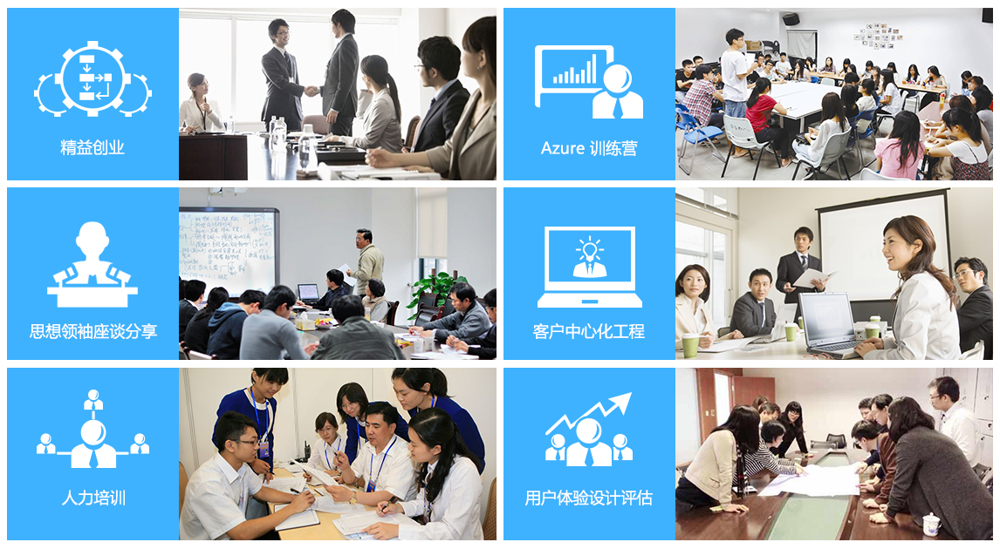

南京微软云暨移动应用孵化平台
快乐创业，助力梦想起航

南京微软云暨移动应用孵化平台介绍
南京微软云暨移动应用孵化平台由南京经济技术开发区管委会与微软（中国）有限公司合作共建，微软（中国）授权运营管理单位南京小鹿创萌科技孵化器运营管理有限公司负责运营。
我们聚焦云计算、大数据、移动物联、移动互联、智能装备和人工智能等新兴产业的加速发展，依托微软品牌的号召力、技术及平台的支撑，利用政府的优惠扶持政策，联手国内外知名创投基金，通过专业的孵化器运营管理，为入选企业和创业者提供技术指导服务、创业指导服务、市场指导服务、产业指导服务、商业模式指导服务、股权与投融资指导服务等多方面的支持与专业的服务。
创业企业申请后，经过筛选进入南京微软云暨移动应用孵化平台，将可以得到12个月的免费办公空间，地址位于国家级南京经济技术开发区兴智科技园A座13与14层，享受南京经济技术开发区创业扶持政策，获得以TCL政府产业引导基金领衔的平台合作基金的关注与支持。入驻团队还将获得由思想领袖、行业专家及技术专家组成的导师团的创业指导及价值1000万人民币的微软软件服务和微软云服务。
南京微软云暨移动应用孵化平台除了为入驻企业提供上述免费服务外，我们每年还将在平台入驻企业中挑选优秀创业项目，帮助申请为期三个月的美国硅谷知名孵化器Y Combinator、Plug&play、StartX的免费交流与培训机会。